Galería de Trabajos
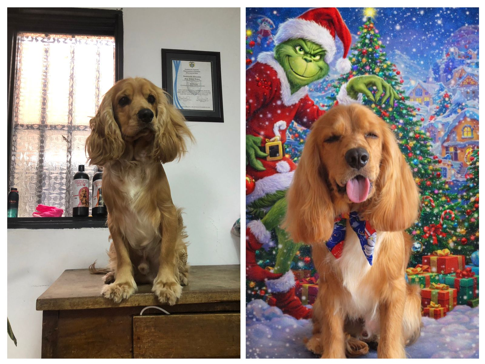
Toby - Antes y Después del Baño
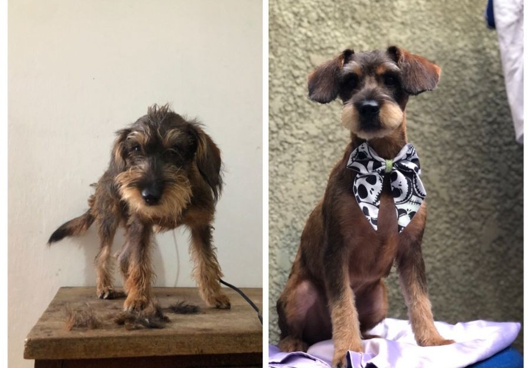
Toby - Corte Estilizado
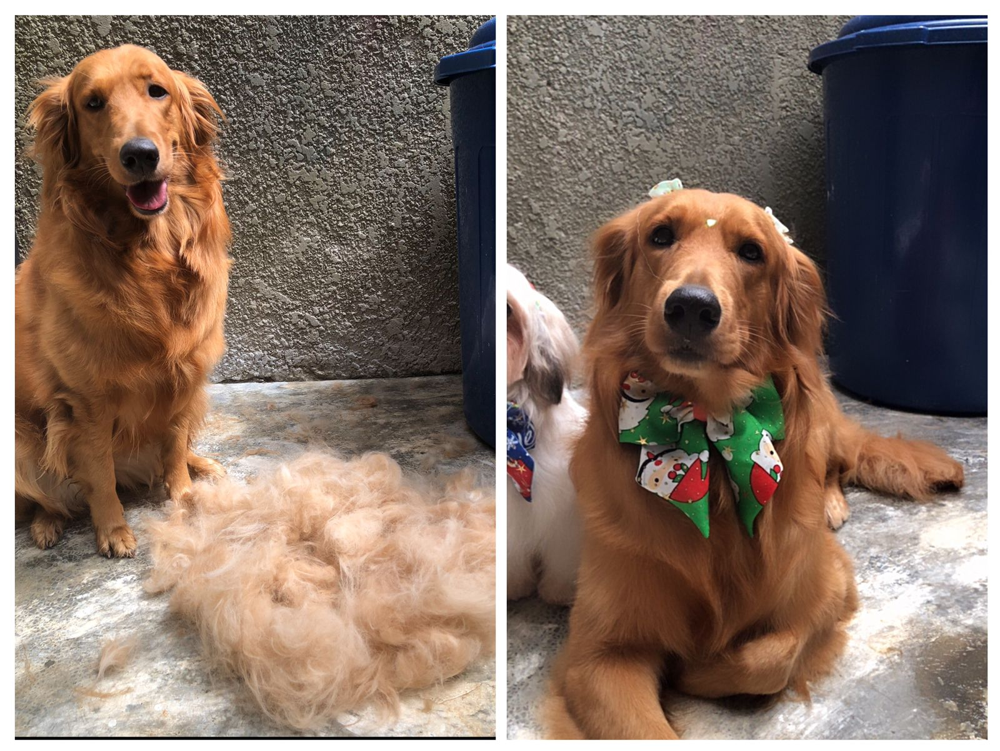
Honey - Deslanado
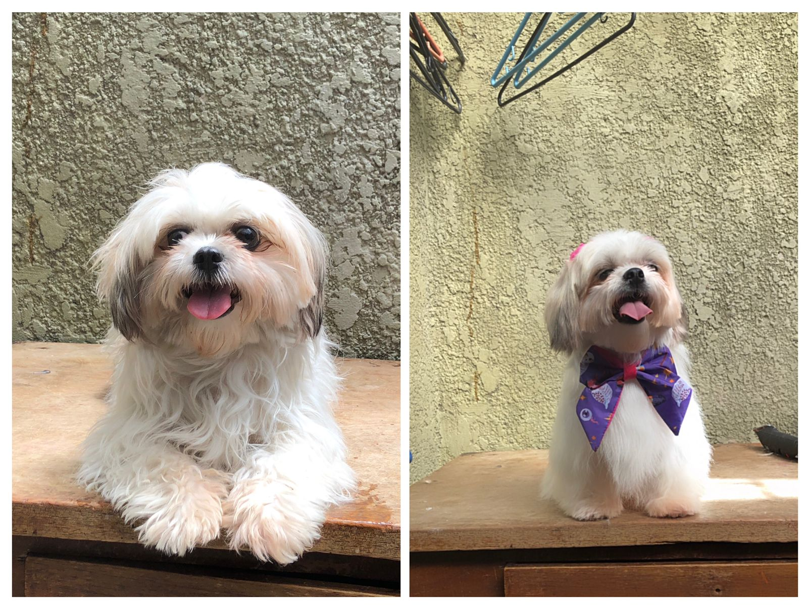
Moon - Cuidado Completo
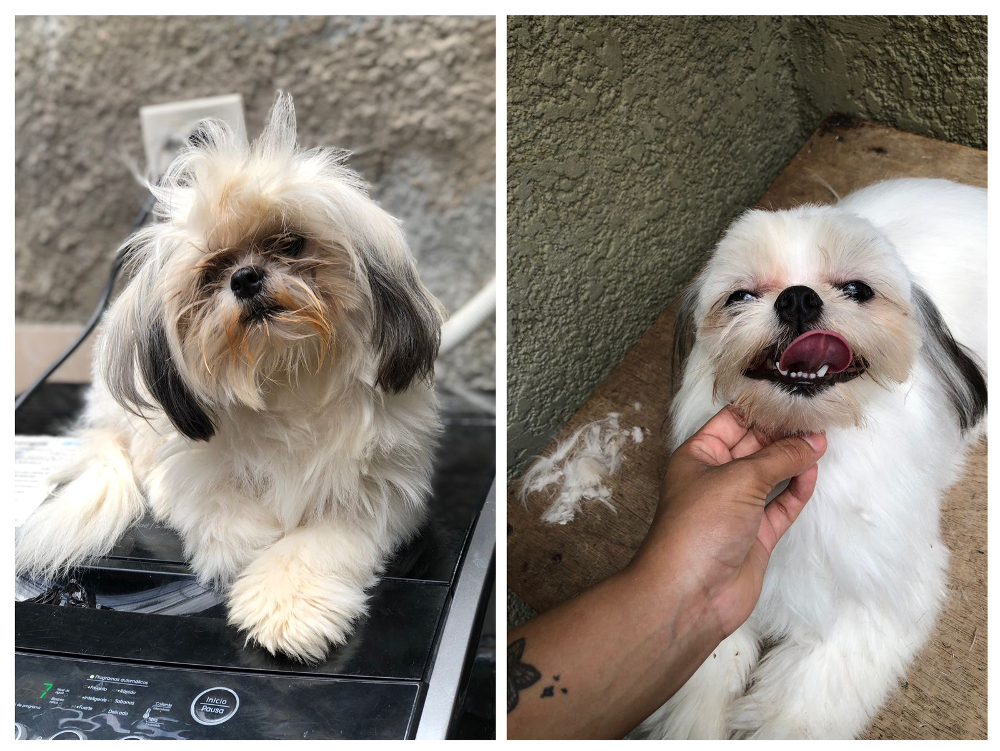
Princesa - Cliente Feliz
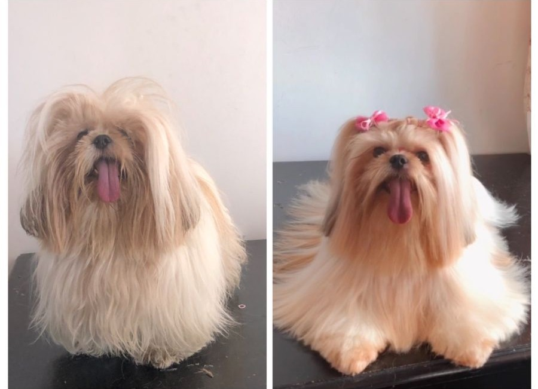
Princesa - Transformación Total

Dakota - Día de Spa
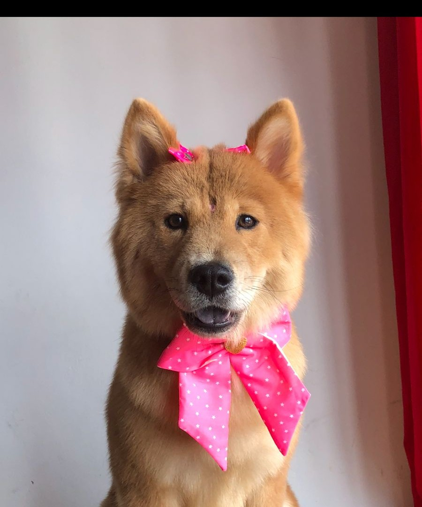
Kasumi - Baño Medicado
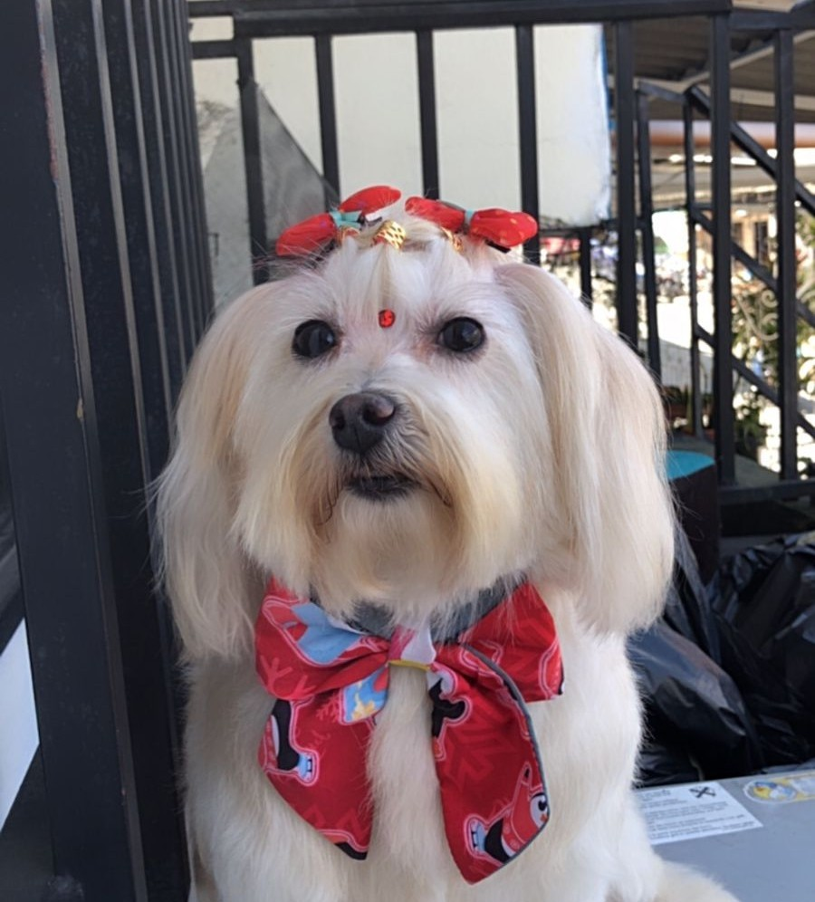
Spa Completo
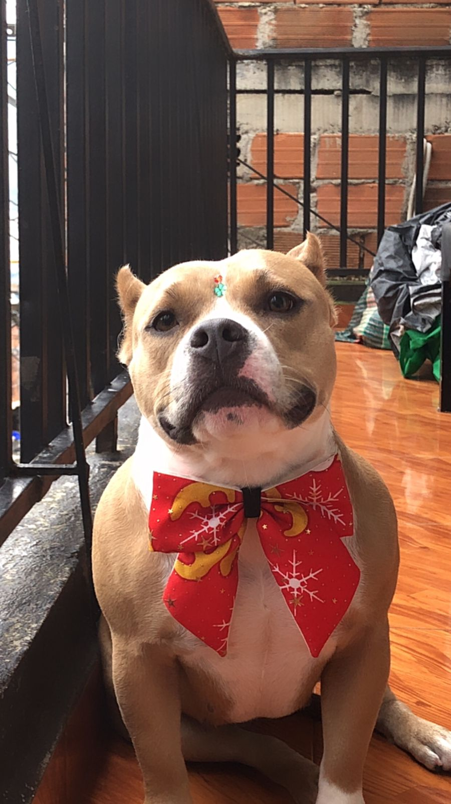
Daylu - Estilo Elegante
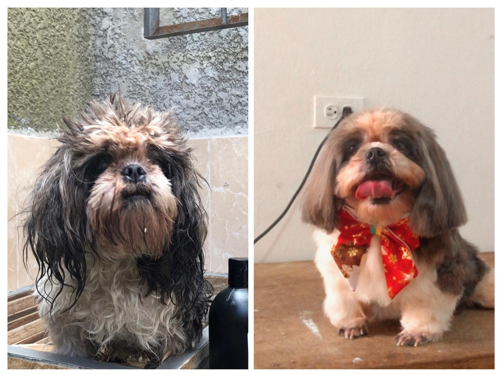
Doky - Sesión de Arreglo
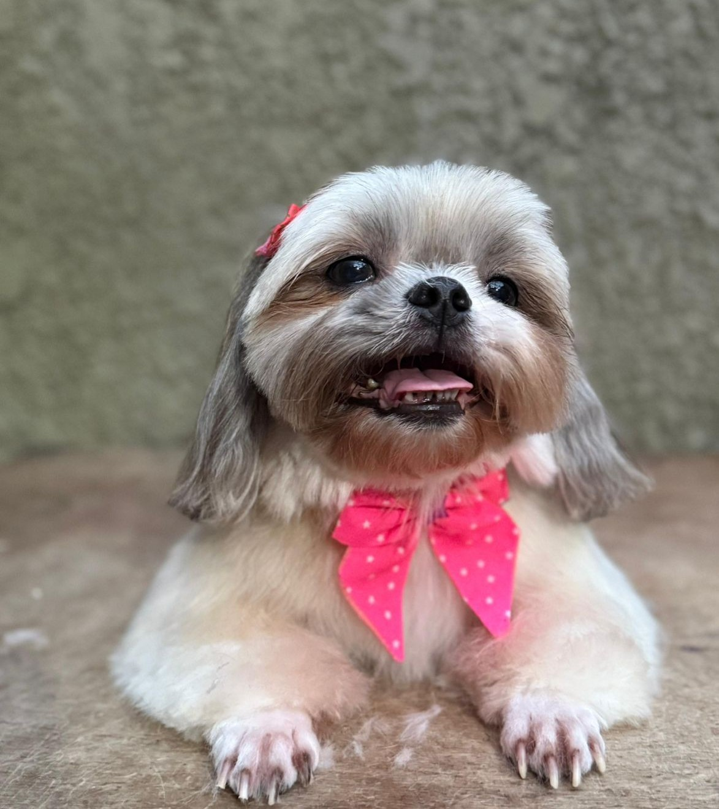
Dulce - Cliente Habitual